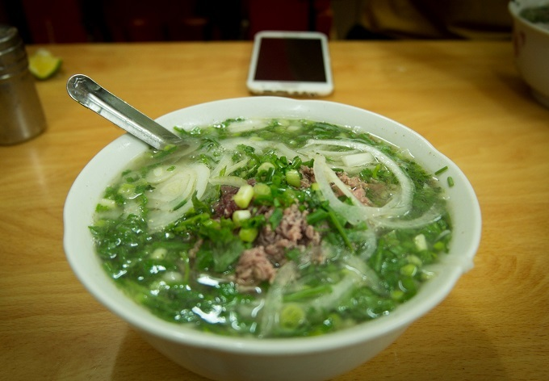
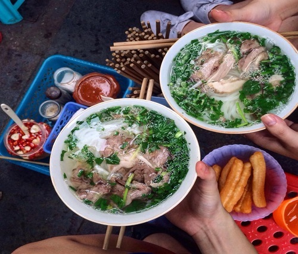
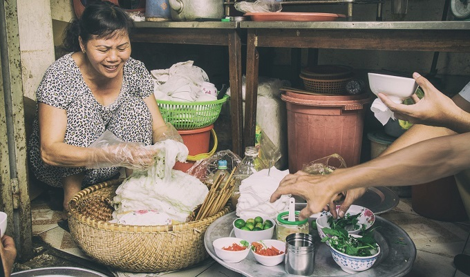
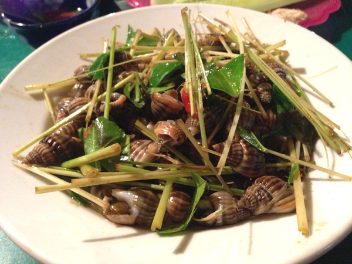
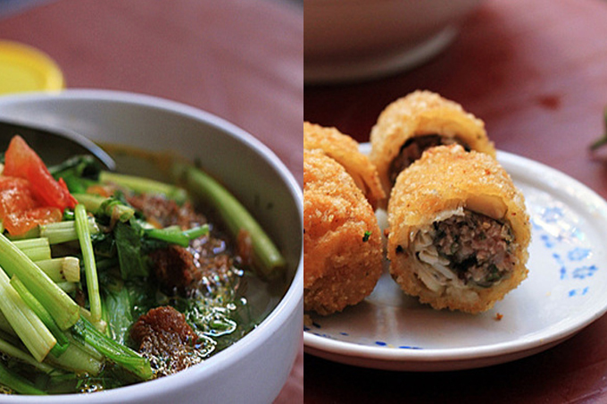
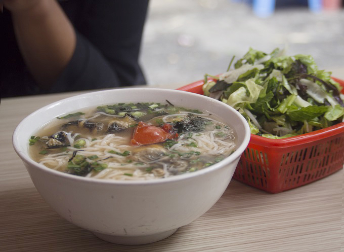
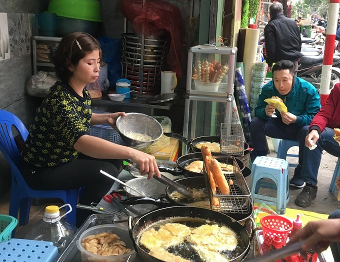
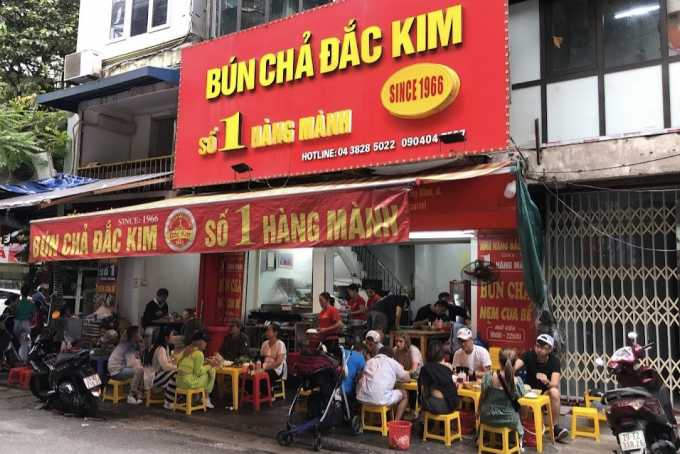
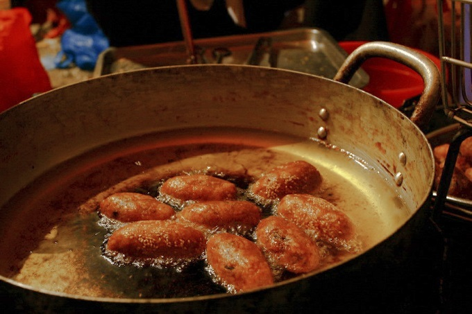
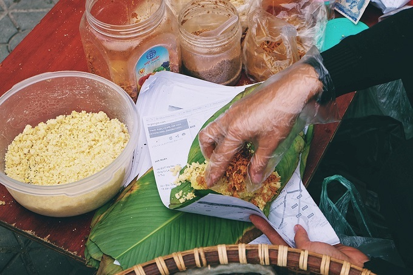

10 Hanoi food shops that don’t need a name to be famous
In Hanoi, many street food stalls thrive without names, signs, or advertising, relying solely on word of mouth, a tradition rooted in the city's history. Despite their anonymity, these stalls often serve exceptional meals, offering a true local experience for hungry visitors.
1. Beef pho (pho bo) | 34 Au Trieu Street
Netizens call this pho bo stall ‘Tư Lùn’ (short Tư), but the middle-aged owner insists on leaving his shop nameless. The rusty signage has been scraped off and is now a blank canvas, but from 6 to 10 in the morning, regulars cram in to get their morning fix of pho.

Pho 34 Au Trieu. Photo by VnExpress/Trang Bui
2. Beef pho (pho bo) | Hang Trong-Hang Bong intersection
If a shop sign is optional, then so are tables at this sidewalk stall on Hang Trong Street. Pho Hang Trong is one of the last stalls that still cling to the decades-old practice that requires eaters to hold their own bowls and sometimes to eat standing up. Feeling uncomfortable? In the past, you even had to bring your own bowl!

Lap-top pho. Photo by Quang Nguyen
3. Steamed rice rolls (banh cuon) – Nguyen Che Nghia Street
The banh cuon shop on Nguyen Che Nghia Street has a sign, but it belongs to another noodle shop. Yes, the two shops share the same location but open as different, a common practice around Hanoi due to the lack of space. Mrs.Tuyet only arrives on her motorbike with a basket of banh cuon, a few bowls and chopsticks at around 3 p.m, but she sells out within the hour.

Steamed rice rolls on Nguyen Che Nghia Street. Photo by VnExpress/Trang Bui
4. Snails – 2 Hang Than Street
If you're considering tucking into a stack of fresh snails on the sidewalk, there’s no need to go looking for a sign. This small stall serves the best snails braised in garlic, chili and lemongrass, which go perfectly with a beer or two in this chilly weather.

Fried snails with lemongrass. Photo by Ngoisao/An Thy
5. Fish noodles (bun ca) – 5 Trung Yen Alley, Dinh Liet Street
It can take a while to figure out how to zigzag your way down the tiny alley in the busy Old Quarter, but the reward is worth it. There’s not only the fish noodles to tempt diners, this stall also serves some of the best fish spring rolls to go with them. Need more directions? Look for the biggest ficus tree in the alley.

Fish noodles and fish spring rolls. Photo by iOne/Xuan Lan
6. Snail noodles (bun oc) – 6 Hang Chai Street
The small but busy complex of Hang Chai Street sells everything: fake flowers, fried ragworms, clothes and most importantly, one of the best snail noodles in the capital. A bowl of snail noodles goes best with fresh salad, boiled beef and gio – a special Vietnamese pork sausage.

Snail noodles on Hang Chai Street. Photo by VnExpress/Trang Bui
7. Vietnamese fritters – 257 La Thanh Street
La Thanh is not the ideal street for sidewalk cuisine due to the lack of space, but some Hanoians still manage to make a living literally on the street. It’d be easy to miss this stall as it blends in with the busy steel shops, but its banana, corn and potato fritters are definitely worth a stop.

Banana, corn and potato fritters on La Thanh Street. Photo by VnExpress/Trang Bui
8. Bun cha – 1 Hang Manh Hang Gai
This restaurant is one of the must try’s here in Hanoi. Given its popularity, it’s true that their food here is very good. A must try dish and resto in Hanoi.

A bun cha eatery crowded with people during lunchtime
9. Deep fried cake balls (banh ran man) – Alley 242, Lac Long Quan Street
If you ever feel hungry in the afternoon, join high school students for this Hanoi snack right in front of a temple in the West Lake area. Deep fried cake balls stuffed with chopped pork might seem too greasy, but the spicy papaya salad that comes with them is a game changer.

Deep fried cake balls on Lac Long Quan Street. Photo by VnExpress/Ha Thanh
10. Sticky rice with mung beans (xoi xeo) – 37 Hang Bai
For a bag of fine sticky rice coated with mung bean paste and fried shallots neatly packed in fresh banana leaves, you’ll have to queue from 6-7 a.m. Hang Bai Street offers quite a spacious alley, hence the longer queue for anyone addicted to this savory breakfast.

Sticky rice with mung beans on Hang Bai Street. Photo by VnExpress/Di Vy